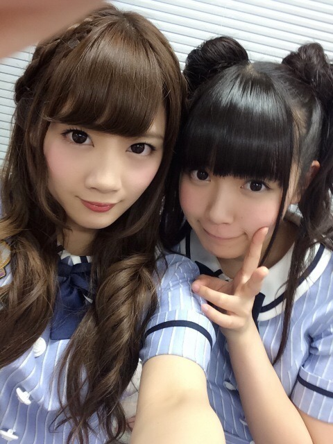
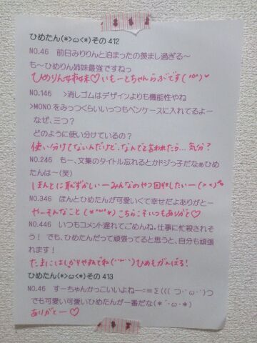

| 2014/07 27 Sun | ひめたん-OoO-その463 |

9thアンダーライブ全公演終了！
来てくださったみなさん
応援してくださったみなさん
本当にありがとうございました！！
まずはお待ちかね
ユニットコーナーですが
みなさんから投票をもとに組んだ
スペシャルユニットのうち
ひめたんが携わったのがこちら☆
1位:せっかちなかたつむり
万理華、川後、北野、永島、山崎、中元
この曲歌うの楽しいのん♡
曲中でひめたんコールがいっぱい届いて
歌っていて本当に気持ちよかったです
堂々の第1位でした！投票ありがとう！
3位:ダンケシェーン
かりん、川後、北野、中田、永島、和田、中元
安定の盛り上がり。この楽曲は本当に愛されてる。
みなさんの合いの手が揃ってる揃ってる！
前回とはまた違うメンバーで披露できたのが
ひとつアンダーライブらしさかな
みなさんダンケシェーン！
6位:渋谷ブルース
川村、中元
乃木坂の歌姫・ろってぃーとふたりで
披露させていただきました(´;ω;`)
ろってぃーとひめたんのふたりで
渋谷ブルースを是非歌ってほしいって意見が
本当に多かったんだよってスタッフさんから聞いて
光栄です。嬉しかったなあ。
いつかろってぃーとデュエットするのが夢でした
みなさん私の夢を叶えてくれてありがとう。
「海流の島よ」「やさしさとは」
「コウモリよ」は
ひめたんはオリジナルメンバーとして
参加させていただいて
私にとってとても大切な曲なので
このライブで選ばれた人には
精一杯やってほしいなって思ってました
特に研究生さんたちは
今回がユニットコーナー初参加だったので
短い期間でよくここまで仕上げてくれたな、と。
3組ともパフォーマンス本当によかった！！
私も負けてられないなって刺激を受けました。
千秋楽は せーらーむーんへあ♡♡

どう？私の本気伝わる？
ということで10公演やってきたわけです
ああ終わっちゃった(´-ω-`)
寂しいけれど総括を書いてみよっかな。
プリンシパル直後からリハ初めて
この1ヶ月間はオフの日も気が気じゃなくて
毎日アンダーライブのこと考えてました
最初は覚えること多いし
間違えたらどうしよう、とか
選抜いないけど大丈夫かな とか
不安なことばかりで
楽しむのが後回しになったり
幕が開いてから閉まるまで
自分のパワーバランスを調節するのが
なかなかできなかったり。
毎公演終わるごとに
怒られて、反省して、悩んで、反省して、
その繰り返しだったなあ
でも回を重ねるごとに
楽曲の中で、MCで
何か仕掛けてやろうとか
どんどん悩みの質があがってきたり
それぞれの改善点を
お互いに見つけて言い合える環境ができて
ああ、このチームいいなって。
いつかも書いたけど
アンダーメンバーの
もっと良いものを作ろう！って
ハングリー精神が心地よかった＼(^o^)／
向上心のある子ばかりで
ほんとにメンバーのこと改めて尊敬した！
アンダーライブは
いつもの乃木坂のライブと違って
会場も大きくなければ、特別な仕掛けもなくて
つまりパフォーマンスのみでしか
ファンのみなさんの心を動かせない
だから毎回ライブの出来は
その日の私たち次第で大きく変わっちゃう
それがアンダーライブだなって私は思っていて。
故にパフォーマンスには
いつも以上に力を入れたつもりです
ボイトレは普段以上に念入りにするとか
立ち位置や歌詞や振り付けを
ひとりひとりが完璧にして本番に臨むとか
もちろん歌手としては当たり前のことなんだけど
今までの私たちの認識は甘かったのかな
その辺の基礎を徹底するように心がけました
すべては、
このアンダーライブを通して
ひとりでも多くのひとに
乃木坂のアンダーって選抜に負けてないじゃん！
って思ってもらいたいから。
「メディアの選抜、ライブのアンダー」
いつかみなさんに
そう認めていただける日が来るといいな
今回のライブを通して少しは力ついたかな。
素直な子ばかりで
みんなで順番にリーダーシップをとれる
ここぞって時には団結できる
9thアンダーにはそんな印象をもっています( ˘ω˘ )
このメンバーでライブできてよかった！
みんな本当にお疲れ様でした！
みおちゃん (堀未央奈ちゃん)がゲスト出演、
わかつき (若月佑美ちゃん)
まなつ (秋元真夏ちゃん)
ななみん (橋本奈々未ちゃん)が
観にきてくれました！ありがとう！
次は真夏の全国ツアー
選抜メンバーも一緒です。
乃木坂46みんなで力を合わせて
ステキなライブにするので
ぜひ会いに来てくださいね(*'v'*)！


昨日 乃木坂46youtube公式チャンネルで
解禁になりました
「ここにいる理由」Music Video Dance Ver.
今までにない
フォーメーションダンスに挑戦してたり
歌衣装やパート分けが確認できたり
ダンスバージョンでは
通常のPVとは雰囲気の違う
「ここにいる理由」を観ていただけます！
のぎ天#3 更新されたよ＼(^o^)／
まだみてない人もいるかもだから
詳しいことは次回のブログに書くー♪
ひめたんの日記の
コメント欄下２ケタに46を踏んだ方へ
手書きでコメ返するコーナー
＼ ひめたん46 ／

明日は乃木のの！伊藤ちゃんず！
(＊´・ω・＊)
コメント(529)
2014/07/27 00:00